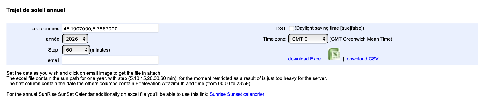
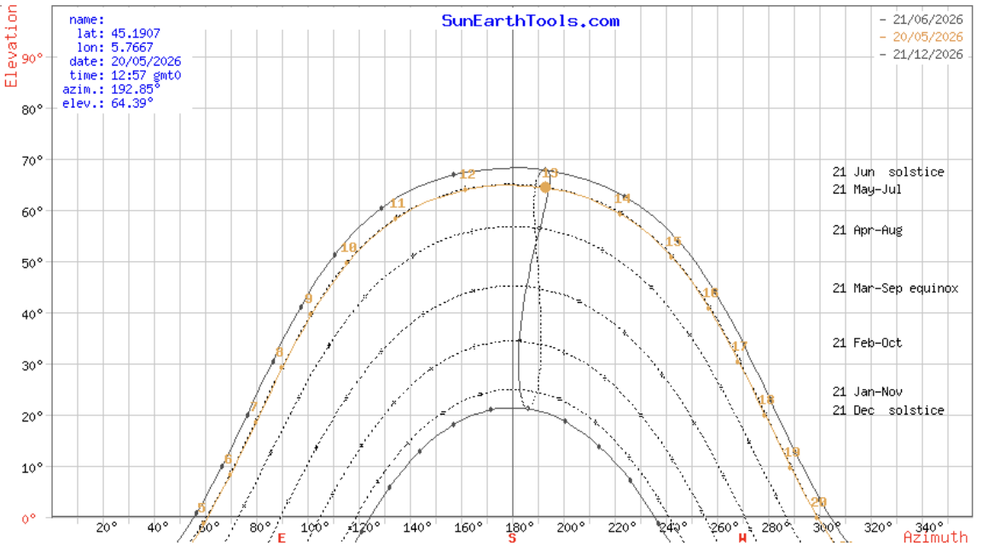
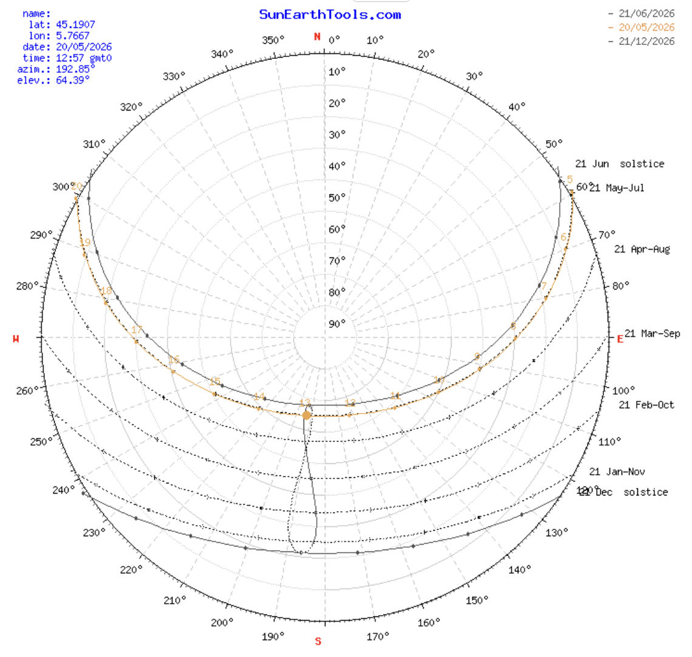
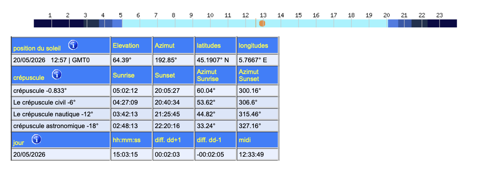

Quelle est la course du soleil sur mon terrain au cours de l'année ?
Tu as un terrain et tu commences à réfléchir à l'implantation de ton bâtiment. Avant toute décision d'orientation ou de volumétrie, tu veux comprendre comment le soleil se déplace autour de ton site selon les saisons, et à quelles heures il éclaire telle ou telle façade.
Pourquoi cette question compte
Le soleil ne se lève pas exactement à l'est et ne se couche pas exactement à l'ouest. Sa trajectoire change radicalement selon la saison : en hiver, le soleil reste bas sur l'horizon et décrit un arc court au sud ; en été, il monte très haut et passe presque au nord en début et fin de journée.
Cette différence a des conséquences directes sur la conception. Un bâtiment orienté sud avec de grandes baies vitrées capte beaucoup de chaleur en hiver (soleil bas qui entre loin dans la pièce) et peut être facilement protégé en été par un simple débord de toiture (soleil haut qui ne rentre plus). Une grande façade ouest, en revanche, reçoit le soleil en fin d'après-midi en été quand le bâtiment est déjà chaud — c'est la principale cause de surchauffe.
Comprendre la course du soleil sur ton terrain spécifique est le premier geste de conception bioclimatique.
Outil recommandé
Sunearthtools
Sunearthtools génère en quelques secondes le diagramme solaire pour n'importe quelle coordonnée GPS dans le monde. Il affiche la trajectoire du soleil au fil des heures et des saisons, l'azimut et la hauteur solaire à chaque moment de l'année, et les heures de lever et de coucher par date. C'est l'outil le plus rapide et le plus accessible pour avoir cette information à l'esquisse, sans aucune modélisation préalable.
Voir la fiche Sunearthtools →Pour aller plus loin avec une modélisation de ton bâtiment sur le terrain, Autodesk Forma intègre une analyse d'ensoleillement par façade directement sur ta volumétrie.
Faire le test : la course du soleil sur PhITEM
L'exemple ci-dessous a été réalisé sur les coordonnées de la maison PhITEM à Saint-Martin-d'Hères (45.1907 N, 5.7667 E).
Étape 1 — Renseigner ton terrain
Sur la page Sunearthtools, renseigne les coordonnées GPS de ton terrain et l'année voulue. Le pas (step) règle la précision du tableau horaire — 60 minutes est suffisant pour une lecture en phase esquisse.

Étape 2 — Lire le diagramme solaire annuel
Sunearthtools affiche un diagramme cartésien superposant les trajectoires des principaux jours de l'année. C'est la vue la plus pédagogique : en un seul coup d'œil, on voit l'écart entre les saisons.

Sur ce diagramme, l'axe horizontal est l'azimut (orientation, 180° = sud) et l'axe vertical est l'élévation (hauteur du soleil au-dessus de l'horizon). Chaque courbe représente la trajectoire du soleil un jour précis :
- Courbe haute : solstice de juin (21/06), hauteur maximale à midi ≈ 68°
- Courbe basse : solstice de décembre (21/12), hauteur maximale à midi ≈ 22°
- Les courbes intermédiaires couvrent les mois et les équinoxes
Étape 3 — Visualiser la trajectoire en vue polaire
La vue polaire (vue du ciel depuis ton terrain) est complémentaire : elle montre les directions de lever et de coucher du soleil selon les saisons.

À la lecture, on voit qu'au solstice de juin le soleil se lève au nord-est (azimut ≈ 55°) et se couche au nord-ouest (azimut ≈ 305°), tandis qu'au solstice de décembre il se lève au sud-est (azimut ≈ 125°) et se couche au sud-ouest (azimut ≈ 235°). La différence d'amplitude est considérable.
Étape 4 — Récupérer les valeurs précises
Sunearthtools fournit également un tableau de position du soleil avec les heures de lever et de coucher, les angles d'azimut correspondants, et le moment du midi solaire. C'est utile pour calculer des ombres portées ou dimensionner un débord de toiture.

Comment lire le résultat
Les deux valeurs-clés à retenir pour ton projet sont la hauteur solaire maximale et l'amplitude de l'arc.
Hauteur solaire maximale (angle du soleil au midi solaire) :
- En hiver à Grenoble, environ 22° — le soleil est bas, les rayons pénètrent loin dans les pièces côté sud. C'est ce qu'on cherche pour les apports solaires passifs.
- En été à Grenoble, environ 68° — le soleil est très haut, un débord de toiture de 50 à 60 cm suffit à couper les apports directs en façade sud.
Heures de lever et coucher selon l'orientation :
- Une façade nord ne reçoit le soleil qu'en été (le soleil « passe » au nord en début et fin de journée d'été)
- Une façade est reçoit le soleil le matin, une façade ouest l'après-midi
Le contraste entre les deux solstices est le fondement de la conception bioclimatique : on capte en hiver, on protège en été.
Bonus : calcul de l'ombre portée
Sunearthtools propose un module qui calcule la longueur d'ombre portée par un obstacle vertical, à partir de sa hauteur et de l'élévation solaire. Utile pour vérifier qu'un bâtiment voisin n'ombrage pas ta façade sud, ou pour dimensionner l'écart entre deux bâtiments en plan masse.
Limites
- Sunearthtools donne la trajectoire théorique du soleil — il ne prend pas en compte les masques solaires de l'environnement (bâtiments voisins, relief, végétation). Pour évaluer les masques, il faut passer sur Forma.
- Pas de visualisation en 3D sur ton bâtiment : le diagramme est abstrait. Pour voir l'ensoleillement sur tes façades, utilise Forma.
- Les données sont pour un ciel dégagé — pas de prise en compte de la météo locale (couverture nuageuse typique, enneigement).
- L'interface est en anglais et un peu datée.
Alternatives
- Autodesk Forma — intègre la course du soleil directement sur la volumétrie modélisée, donne le nombre d'heures d'ensoleillement par façade. Plus riche mais demande de modéliser le bâtiment.
- Climate Consultant — lit un fichier météo EPW et propose des analyses solaires plus poussées, notamment les radiations globales par orientation.
Pour aller plus loin
- ADEME — Guide « Concevoir bioclimatique »
- Cours ENSE3 PARIN — Architecture bioclimatique
- Documentation Autodesk Forma — module Sun hours analysis